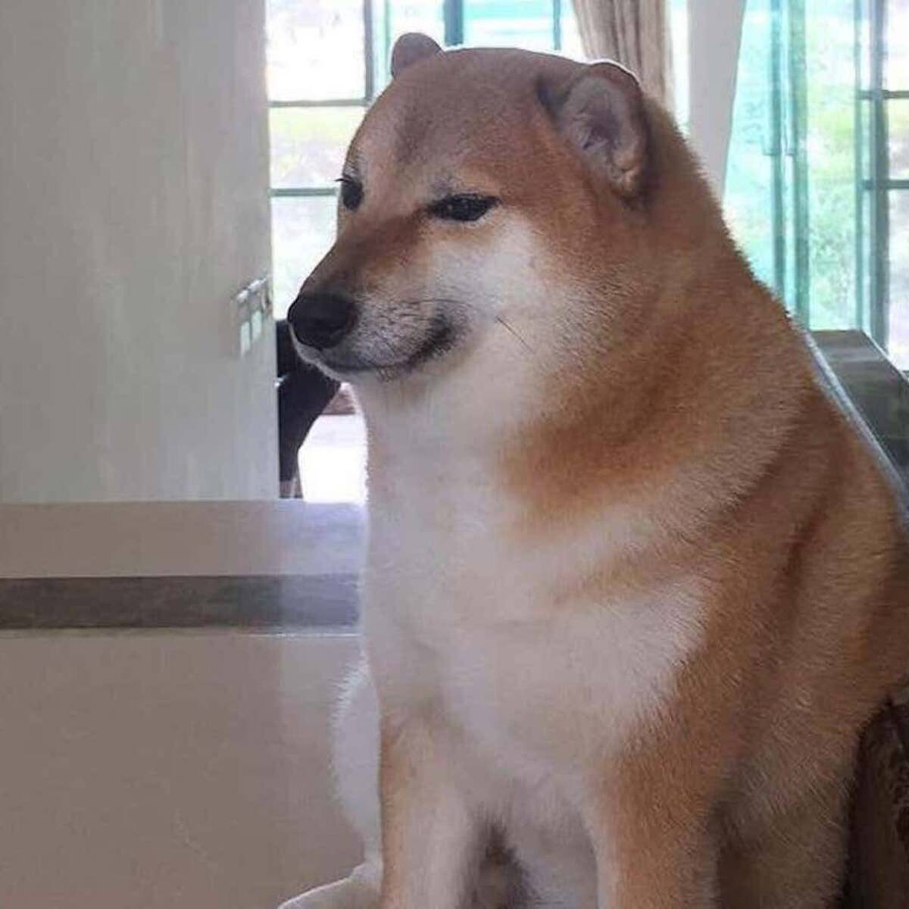
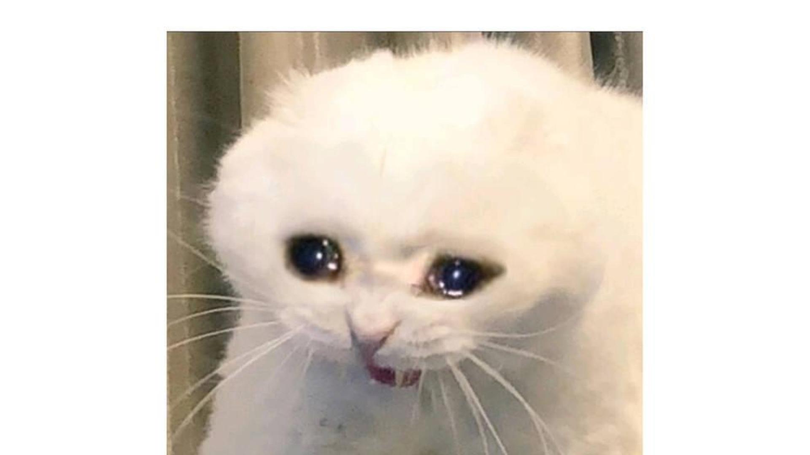
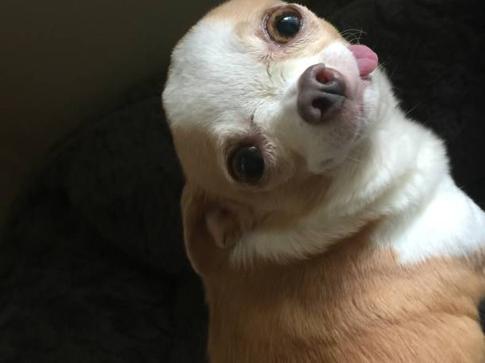
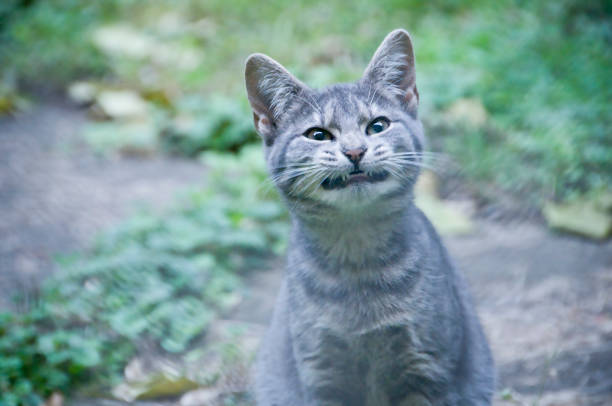

Conoce a "Galaxia I, El Inmutable", un ejemplar de felino doméstico que opera
bajo la firme convicción de que tu casa es, en realidad, un complejo palaciego diseñado
exclusivamente para su comodidad y servicio.
Sir Ronroneo no es una mascota; es un dictador benevolente de cuatro patas. Su liderazgo
se basa en principios de dominación sutil y exigencia constante.
Él es Roberto, es un hamster muy anioso por estar haciendo algo,incluso
para comer no se queda quieto en un lugar sino que va moviendo la coca

Él es DoggyDoggy, un perro que le gusta molestar a los demás, hacer daños
y acabar con todo.

No está triste... está decepcionado con la calidad existencial de su cama.
Es un alma dramática que ha descubierto la pesada carga de la vida: tener que mover
una pata para alcanzar su juguete favorito.

Conoce a Capitán, un perro de distinguido linaje cuyo procesador mental opera
consistentemente con un lag de dos segundos.
El Capitán no tiene fallas, solo una interpretación muy personal de la realidad.

Sus maullidos son suspiros traducidos,
sus siestas, escapismos filosóficos. Vive en un estado de perpetuo 'casi' sollozo,
convencido de que le falta algo vital, vivir.